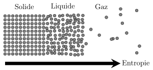
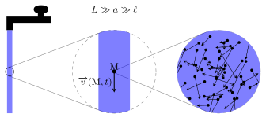
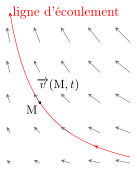
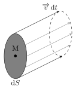
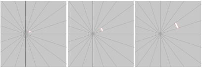
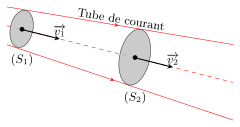
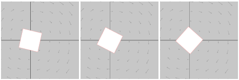
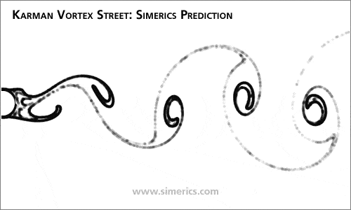

Le terme fluide désigne un comportement qui s’oppose au comportement élastique ou plastique
associé aux solides. Par définition, on dit que la matière est fluide lorsqu’elle se
déforme aussi longtemps que lui sont appliquées des contraintes tangentielles. En termes
simples on peut dire qu’un fluide coule quand un solide se déforme.
Fondamentalement, le comportement fluide est lié, au niveau moléculaire, à l’absence d’ordre
à longue portée (contrairement aux cristaux) et à l’existence d’un chaos moléculaire
(contrairement aux solides). Ces propriétés se retrouvent notamment chez les gaz et les
liquides.

Les trois états de la matière.
Les liquides
Dans un liquide, les interactions (l’interaction de Van der Waals, la liaison hydrogène,
l’interaction électrostatique dans une solution électrolytique, etc.) jouent un rôle clé.
L’interaction est telle que les molécules sont quasi en contact ce qui explique le caractère
quasi-incompressible des liquides : les liquides présentent un volume propre. Les
variations du volume \(V\) ou de la masse volumique \(\rho\) avec la pression (\(p\)) et la
température (\(T\)) se mesurent à l’aide du coefficient de dilatation \(\alpha\) et du
coefficient de compressibilité \(\chi_T\) :
$$
\quad \chi_T = \frac{1}{\rho} \left. \frac{\partial\rho}{\partial p} \right|_T
$$
et
$$
\quad \alpha = - \frac{1}{\rho} \left. \frac{\partial\rho}{\partial T} \right|_p
$$
Pour l’eau, par exemple, la compressibilité vaut
\(\chi_T \approx 4,4.10^{−10}\,\rm{Pa^{−1}}\) à 20 °C. Cela signifie qu’il faut
augmenter la pression de 227 bars pour voir la masse volumique augmenter de
1 %. Les liquides ont également un coefficient de dilatation très faible.
Le gaz
Dans un gaz, les particules interagissent peu, l’énergie est avant tout cinétique. Les
distances inter-atomiques sont grandes ce qui explique qu’à l’inverse des liquides, les gaz
sont très compressibles. Pour un gaz, dans les conditions de pression et de température
raisonnables et loin de tout point critique, le modèle du gaz parfait est tout à fait
suffisant.
Approximation courantes
On fera l’approximation suivante pour les liquides :
$$
\quad \boxed{ \rho \approx \text{constante} }
$$
Pour les gaz, on utlisera le modèle du gaz parfait :
$$
\quad \boxed{ pV = nRT \Rightarrow \rho = \frac{Mp}{RT} }
$$
Le modèle continu
Plusieurs approches sont possibles pour décrire un fluide.
L’approche Dynamique Moléculaire :
On peut chercher le comportement de \(N\) molécules en résolvant de façon numérique les
équations de la mécanique du point appliquées aux \(N\) corps. Bien entendu, la limitation
des ordinateurs, impose \(N\) petit. À l’heure actuelle le record est de l’ordre de
100 milliards d’atomes.
L’approche milieu continu :
Lorsque le libre parcours moyen \(\ell\) est très petit devant l’échelle macroscopique, on
choisit de décrire le fluide à une échelle intermédiaire entre l’échelle atomique et
macroscopique : l’échelle mésoscopique.
L’approche statistique :
Lorsque le libre parcours moyen des molécules est du même ordre de grandeur que l’échelle
macroscopique onutilise les équations de physique statistique (équation de Boltzmann) pour
décrire le fluide.
La mécanique des fluides repose sur la deuxième approche. En effet, dans les situations
courantes on peut, en général, distinguer trois échelles :
L’échelle macroscopique \(L\). Par exemple \(L\) est le diamètre du tuyau quand on
étudie l’écoulement dans un tuyau.
L’échelle des collisions \(\ell \ll L\). \(\ell\) est le libre parcours moyen,
c’est-à-dire la distance moyenne parcourue par une molécule entre deux collisions
successives. À cette échelle, les grandeurs varient de façon discontinue et
imprévisible.
L’échelle mésoscopique \(a\) telle que \(\ell \ll a \ll L\). À cette échelle, les
fluctuations sont lissées de sorte que l’on peut définir des grandeurs locales
continues.

Les trois états de la matière.
Particule de fluide
On choisit alors comme échelle d’observation, l’échelle mésoscopique. On considère, autour
d’un point \(M\), un volume mésoscopique \(\delta\tau\). Typiquement un volume de
\(1\,\mu m^3\) convient. Ce volume contient un grand nombre de particules ce qui permet de
définir des grandeurs moyennes locales qui, elles, vont évoluer de façon continue :
la masse volumique locale \(\rho(M,t)\), la vitesse locale \(\overrightarrow{v}(M,t)\), …
On donne à ce sac de molécules le nom de particule de fluide qu’il ne faut pas
confondre avec la notion de molécule.
Conditions de validité du modèle
Un milieu peut être considéré continu si le libre parcours moyen \(\ell\) des molécules est
petit devant la taille caractéristique \(L\) du système étudié. On définit le nombre de
Knudsen :
$$
\quad \boxed{ K_n = \frac{\ell}{L} \ll 1 }
$$
Lorsque \(K_n\) n’est pas petit devant 1, le modèle continu n’est plus adapté.
Par exemple, dans la haute atmosphère, à l’altitude de 100 km, on a
\(\ell\approx 0,3\,m\). Pour calculer l’écoulement autour d’un véhicule spatial à cette
altitude, le modèle continu ne conviendra pas.
Description d’un fluide en écoulement
Deux approches différentes existent. Le point de vue de Lagrange consiste à s’intéresser à
la trajectoire des particules de fluide. Celle d’Euler se concentre sur l’évolution des
propriétés du fluide en différents points et au cours du temps.
Notion de ligne d’écoulement
Adoptons l’approche d’Euler et supposons que l’on connaisse à chaque instant \(t\) le
vecteur vitesse d’une particule de fluide située en M. Le vecteur vitesse
\(\overrightarrow{v}(M,t)\) désigne alors un champ vectoriel.
Définition
Par définition, une ligne de courant ou ligne d’écoulement, est une ligne de champ du
vecteur vitesse, c’est-à-dire une courbe \(\mathcal{C}\) telle qu’à un instant \(t\) fixé,
pour tout point \(M \in \mathcal{C}\), \(\overrightarrow{v}(M,t)\) est tangent à
\(\mathcal{C}\) en \(M\).
Lorsque le champ de vitesse ne dépend pas du temps, les lignes d’écoulement n’évoluent pas
au cours du temps : on dit que le régime d’écoulement est stationnaire ou
permanent.

Notion de ligne d’écoulement.
Pour un problème à deux dimensions, l’équation \(f(x,y)=0\) d’une ligne d’écoulement
s’obtient en résolvant l’équation différentielle
$$
\quad \frac{\mathrm{d}y}{\mathrm{d}x} = \frac{v_y(x,y,t)}{v_x(x,y,t)}
$$
avec \(t\) fixe.
Visualisation des lignes d’écoulement
On utilise des particules réfléchissantes que l’on photographie avec un court temps de pose.
On a accès ainsi à des segments brillants qui donnent le sens de la vitesse en différents
points ce qui permet de reconstituer la carte du champ de vitesse.
Notion de trajectoire
Définition
Dans la description de Lagrange, on s’intéresse à l’histoire de chaque particule de fluide.
Considérons une particule de fluide \(\mathcal{P}\) située en \((x(t),y(t),z(t))\) à
l’instant \(t\). Par définition la trajectoire est la courbe paramétrique \(\mathcal{C}\)
d’équation :
$$
\quad \mathcal{C} \begin{cases}
x(t) \\
y(t) \\
z(t)
\end{cases}
$$
tel que
$$
\quad \begin{cases}
\dot x = v_x(x(t),y(t),z(t)) \\
\dot y = v_y(x(t),y(t),z(t)) \\
\dot z = v_z(x(t),y(t),z(t))
\end{cases}
$$
La trajectoire retrace l’histoire d’une particule alors que la ligne d’écoulement est un
instantanée du champ de vitesse. De ce fait, ces deux notions sont différentes. Par
contre, lorsque que le régime d’écoulement est stationnaire, une particule suit
nécessairement la ligne d’écoulement sur laquelle elle se trouve puisque celle-ci est fixe.
Visualisation d’une trajectoire
On utilise des traceurs (colorants ou fumées) et l’on prend une photo avec un long temps de
pose.
Dérivée particulaire
Considérons une grandeur physique locale \(G(M,t)\) attachée à une particule de fluide
située en \(M\)M à l’instant \(t\). On peut penser à la température, la pression, la
densité, etc. Cherchons à calculer le taux de variation de cette grandeur lorsque l’on suit
la particule. On appelle cette grandeur la dérivée particulaire et on la note
\(\frac{\mathrm{D}G}{\mathrm{D}t}\).
$$
\quad \begin{aligned} \frac{\mathrm{D}G}{\mathrm{D}t} &=
\lim_{\delta t \to 0}{ \frac{ G(x+v_x \delta t,y+v_y\delta t,z+v_z\delta t,t+\delta t)
- G(x,y,z,t)}{\delta t} } \\
&= \frac{ G(x,y,z,t) + v_x \frac{\partial G}{\partial x} \delta t
+ v_y \frac{\partial G}{\partial y} \delta t
+ v_z \frac{\partial G}{\partial z} \delta t
+ \frac{\partial G}{\partial t} \delta t
- G(x,y,z,t)}{\delta t}
\end{aligned}
$$
Ce qui donne la formule :
$$
\quad \boxed{ \frac{\mathrm{D}G}{\mathrm{D}t}
= \frac{\partial G}{\partial t}
+ \left( \overrightarrow{v} \cdot \overrightarrow{\nabla} \right) G }
$$
Accélération d’une particule
Calculons l'accélération d'une particule de fluide à partir du champ de vitesse eulérien
\(\overrightarrow{v}(M,t)\). L'accélération est le taux de variation du champ de vitesse en
suivant une particule de fluide. On a donc :
$$
\quad \overrightarrow{a} =
\frac{\mathrm{D}v_x}{\mathrm{D}t} \overrightarrow{u_x}
+ \frac{\mathrm{D}v_y}{\mathrm{D}t} \overrightarrow{u_y}
+ \frac{\mathrm{D}v_z}{\mathrm{D}t} \overrightarrow{u_z}
$$
Ce qui donne :
$$
\quad a_x = \frac{\mathrm{D}v_x}{\mathrm{D}t}
=\frac{\partial v_x}{\partial t}
+ \left( \overrightarrow{v} \cdot \overrightarrow{\nabla} \right) v_x
$$
$$
\quad a_y = \frac{\mathrm{D}v_y}{\mathrm{D}t}
=\frac{\partial v_y}{\partial t}
+ \left( \overrightarrow{v} \cdot \overrightarrow{\nabla} \right) v_y
$$
$$
\quad a_z = \frac{\mathrm{D}v_z}{\mathrm{D}t}
=\frac{\partial v_z}{\partial t}
+ \left( \overrightarrow{v} \cdot \overrightarrow{\nabla} \right) v_z
$$
On pourra retenir le résultat sous forme compacte :
$$
\quad \boxed{ \overrightarrow{a}(M,t) = \frac{\mathrm{D}v}{\mathrm{D}t} =
\frac{\partial v}{\partial t}
+ \left( \overrightarrow{v} \cdot \overrightarrow{\nabla} \right) \overrightarrow{v} }
$$
Le premier terme est lié au caractère non permanent de l’écoulement alors que le second au
fait que la particule, en se déplaçant, visite des endroits où la vitesse change. On
l’appelle le terme convectif.
Conservation de la masse
Vecteur densité de courant de masse
Un écoulement est un phénomène de transport puisqu’il s’agit d’un transfert de masse. C’est
pourquoi il est naturel d’introduire la notion de vecteur densité de courant de
masse.
Pour cela, cherchons à exprimer la masse qui traverse une section \((S)\) lors d’un
écoulement. Considérons une section infinitésimale \(\mathrm{d}S\) autour d’un point \(M\)
et calculons la masse \(\mathrm{d}^2m\) de fluide traversant \(\mathrm{d}S\) pendant
\(\mathrm{d}t\). Cette masse se trouve dans le prisme de base \(\mathrm{d}S\) et de
génératrice \(\overrightarrow{v}\mathrm{d}t\). On a donc :
$$
\quad \mathrm{d}^2m =
\rho(M,t)\overrightarrow{v}(M,t) \cdot \overrightarrow{n}\,\mathrm{d}t\,\mathrm{d}S
$$
où \(\overrightarrow{n}\) est le vecteur normal à la section \(\mathrm{d}S\).

Calcul du débit massique.
En sommant toutes les contributions on obtient :
$$
\quad \mathrm{d}m = \left( \iint_{M \in (S)} {
\rho(M,t)\overrightarrow{v}(M,t) \cdot \overrightarrow{n}\,\mathrm{d}S }
\right) \mathrm{d}t
$$
On en déduit le flux de matière ou débit massique :
$$
\quad Q_m \overset{def}{=} \frac{\mathrm{d}m}{\mathrm{d}t}
= \iint_{M \in (S)} {
\rho(M,t)\overrightarrow{v}(M,t) \cdot \overrightarrow{n}\,\mathrm{d}S }
$$
Le débit massique est donc, au sens mathématique, le flux du vecteur
\(\overrightarrow{J_m} = \rho \overrightarrow{v} \).
Le vecteur \(\overrightarrow{J_m}\) désigne le vecteur densité de courant de masse.
Équation de continuité
Établissons la première équation fondamentale de la mécanique des fluides. Il s’agit d’une
contrainte imposée à \(\overrightarrow{v}(M,t)\) et \(\rho(M,t)\) qui repose sur une loi de
conservation, celle de la masse.
Prenons un volume de contrôle fixe (\(V\)) dans un fluide, délimité par une surface fictive
(\(S\)). Soit \(m(t)\) la masse contenue à l’intérieur de la surface fermée à l’instant
\(t\). Par définition de la masse volumique,
$$
\quad m(t) = \iiint_{M \in V} { \rho(M,t) \mathrm{d}\tau}
$$
Cette masse varie à cause du flux de matière à travers (\(S\)) :
$$
\quad \frac{\mathrm{d}m(t)}{\mathrm{d}t}
= -\iint_{M \in S} { \rho(M,t)\overrightarrow{v} \cdot
\overrightarrow{\mathrm{d}S}^{ext} }
$$
où \(\overrightarrow{\mathrm{d}S}^{ext}\) est dirigé vers l’extérieur de la surface fermée
(\(S\)) ce qui explique l’origine du signe \(-\) devant l’intégrale.
D’après le
théorème de Green-Ostrogradsky on a alors :
$$
\quad \frac{\mathrm{d}m(t)}{\mathrm{d}t}
= -\iiint_{M \in V} { \mathrm{div}(\rho(M,t)\overrightarrow{v}) \mathrm{d}\tau }
$$
On a également :
$$
\quad \frac{\mathrm{d}m(t)}{\mathrm{d}t} =
\iiint_{M \in V} { \frac{\partial \rho(M,t)}{\partial t} \mathrm{d}\tau}
$$
D’où l'on tire l’équation de conservation de la masse, dite aussi équation de
continuité :
$$
\quad \boxed{ \mathrm{div}(\rho\overrightarrow{v})
+ \frac{\partial \rho}{\partial t} = 0 }
$$
Caractéristiques d’un écoulement
Interprétation de la divergence de la vitesse
La quantité \(\mathrm{div}(\overrightarrow{v})\) prend une signification bien précise en
mécanique des fluides. Partons de la relation :
$$
\quad \mathrm{div}(f \cdot \overrightarrow{A}) =
f\mathrm{div}(\overrightarrow{A})
+ \overrightarrow{A} \cdot \overrightarrow{\mathrm{grad}}(f)
$$
Appliqué au vecteur densité de courant de matière \(\overrightarrow{J_m} = \rho
\overrightarrow{v} \) cela donne :
$$
\quad \mathrm{div}(\rho \overrightarrow{v}) =
\rho\mathrm{div}(\overrightarrow{v})
+ \overrightarrow{v} \cdot \overrightarrow{\mathrm{grad}}(\rho)
$$
En utilisant l’équation de continuité on obtient :
$$
\quad \frac{\partial \rho}{\partial t} + \overrightarrow{v} \cdot
\overrightarrow{\mathrm{grad}}(\rho) = -\rho\mathrm{div}(\overrightarrow{v})
$$
On reconnaît dans le terme de gauche, la dérivée particulaire de \(\rho\), d’où :
$$
\quad \mathrm{div}(\overrightarrow{v})= -\frac{1}{\rho} \frac{\mathrm{D}\rho}{\mathrm{D}t}
$$
Si l’on note \(\delta m\) et \(\delta \tau\) la masse et le volume d’une particule de fluide
en mouvement on peut écrire :
$$
\quad -\frac{1}{\rho} \frac{\mathrm{D}\rho}{\mathrm{D}t} =
-\frac{1}{\rho} \frac{\mathrm{D}(\delta m / \delta \tau)}{\mathrm{D}t}
= \frac{\delta m}{\rho {\delta \tau}^2} \frac{\mathrm{D}\delta \tau}{\mathrm{D}t}
= \frac{1}{\delta \tau} \frac{\mathrm{D}\delta \tau}{\mathrm{D}t}
$$
Finalement on obtient :
$$
\quad \boxed{ \mathrm{div}(\overrightarrow{v})=
\frac{1}{\delta \tau} \frac{\mathrm{D}\delta \tau}{\mathrm{D}t}}
$$
La divergence de la vitesse d’écoulement représente ainsi la vitesse de dilatation de la
particule de fluide.
Exemple 1 : écoulement unidimensionnel uniforme
Considérons l’écoulement décrit par le champ de vitesse :
$$
\quad \overrightarrow{v}(M,t) = v \overrightarrow{u_x}
$$
Les lignes de courant sont des droites parallèles et l’écoulement est à divergence nulle.
Les particules de fluide se déplacent sans se dilater.
Particule de fluide dans un écoulement uniforme, capturé à différents
instants.
Exemple 2 : écoulement radial
Considérons l’écoulement décrit en coordonnées polaires par le champ de vitesse :
$$
\quad \overrightarrow{v}(M,t) = v \overrightarrow{u_r}
$$
Les lignes de courant sont des droites issues de l’origine et les particules de fluide se
déplacent en se dilatant, ce qui prouve que l’écoulement est à divergence positive.

Particule de fluide dans un écoulement radial, capturé à différents
instants.
Écoulement incompressible
Définition
Un fluide est en écoulement incompressible quand les particules de fluide ont un volume qui
reste constant au cours de l’écoulement. Elles se déforment donc sans variation de masse
volumique :
$$
\quad \boxed{ \frac{\mathrm{D}\rho}{\mathrm{D}t} = 0 }
$$
Par conséquent, d’après la relation sur la divergence de la vitesse, un fluide en écoulement
incompressible vérifie la relation :
$$
\quad \mathrm{div}(\overrightarrow{v}) = 0 \Leftrightarrow
\iint_{(S)}{\overrightarrow{v} \cdot \overrightarrow{\mathrm{d}S}^{ext} } = 0
$$
La vitesse est à flux conservatif.
Tube de courant
Toutes les lignes de courant qui s’appuient sur une courbe \(\mathcal{C}\) fermée
constituent un tube de courant. Dans ce cas, la conservation du flux de vitesse s’exprime
par :
$$
\quad \iint_{(S_1)}{\overrightarrow{v} \cdot \overrightarrow{\mathrm{d}S}_1 }
= \iint_{(S_2)}{\overrightarrow{v} \cdot \overrightarrow{\mathrm{d}S}_2 }
$$
Soit
$$
\quad Q_{V1} = Q_{V2}
$$
Le débit volumique se conserve le long d’un tube de courant.

Tube de courant.
Si l’on définit la vitesse moyenne dans le section \(S\) par :
$$
\quad \boxed{ \overline{v} \overset{def}{=} \frac{Q_V}{S} }
$$
On obtient
$$
\quad \overline{v_1}S_1 = \overline{v_2}S_2
$$
Autrement dit, dans un tube de courant, le resserrement des lignes de courant provoque
une augmentation de la vitesse moyenne.
Interprétation du rotationnel de la vitesse
Exemple
Commençons par l’étude de l’exemple suivant.
Soit un écoulement bidimensionnel dont le champ de vitesse s’écrit :
$$
\quad \overrightarrow{v}(M,t) = -k y \overrightarrow{u_x} + k x \overrightarrow{u_y}
$$
Tout d’abord, on constate que :
$$
\quad \mathrm{div}(\overrightarrow{v})=\frac{-ky}{\partial x}+\frac{-kx}{\partial y}=0
$$
L’écoulement est incompressible.
Le rotationnel de la vitesse vaut :
$$
\quad \overrightarrow{\mathrm{rot}}(\overrightarrow{v})
= \overrightarrow{\nabla} \wedge \overrightarrow{v}
= \left( \frac{kx}{\partial x} - \frac{-ky}{\partial y} \right) \overrightarrow{u_z}
= 2k\overrightarrow{u_z}
$$
Plaçons une particule carrée d’arête \(2a\) en \(O\). Quel est son mouvement ?
La figure ci-dessous montre que les sommets sont animés d’une vitesse orthoradiale de sorte
que la particule tourne autour de \(O\). La vitesse d’un sommet vaut \(v = \sqrt{2}ka\) d’où
une vitesse angulaire de rotation \(\omega = k\).

Particule de fluide dans un écoulement radial, capturé à différents
instants.
Vecteur tourbillon
L’exemple précédent montre que pour un écoulement rotationnel, les particules de fluide
tournent à une vitesse angulaire égal à la moitié de la valeur du rotationnel. De manière
générale, on définit le vecteur tourbillon :
$$
\quad \overrightarrow{\Omega}
= \frac{1}{2} \overrightarrow{\mathrm{rot}}\overrightarrow{v}
$$
Lorsque \(\overrightarrow{\Omega} \neq \overrightarrow{0}\), l’écoulement est
tourbillonnaire ce qui se traduit par l’existence d’un mouvement de rotation des particules
lors de l’écoulement.

Allée tourbillonnaire de Von Karman produit par un écoulement suffisamment
rapide autour d’un obstacle cylindrique.
Écoulement potentiel
Lorsque \(\overrightarrow{\Omega} = \overrightarrow{0}\), le champ de vitesse est
nécessairement un gradient.
$$
\quad \overrightarrow{\mathrm{rot}}\overrightarrow{v} = \overrightarrow{0}
\Rightarrow \overrightarrow{v} = \overrightarrow{\nabla} \varphi
$$
où \( \varphi(M,t) \) désigne le potentiel des vitesses. Dans ce cas on parle
d’écoulement irrotationnel ou potentiel.